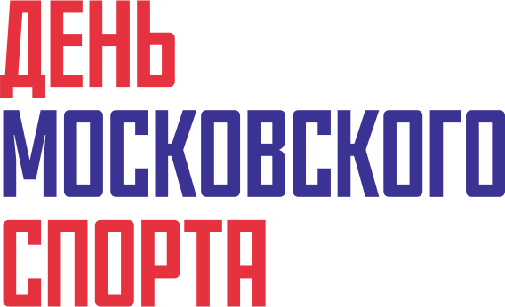
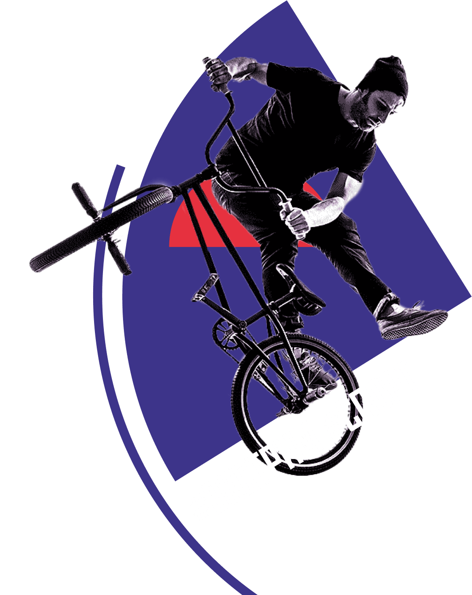
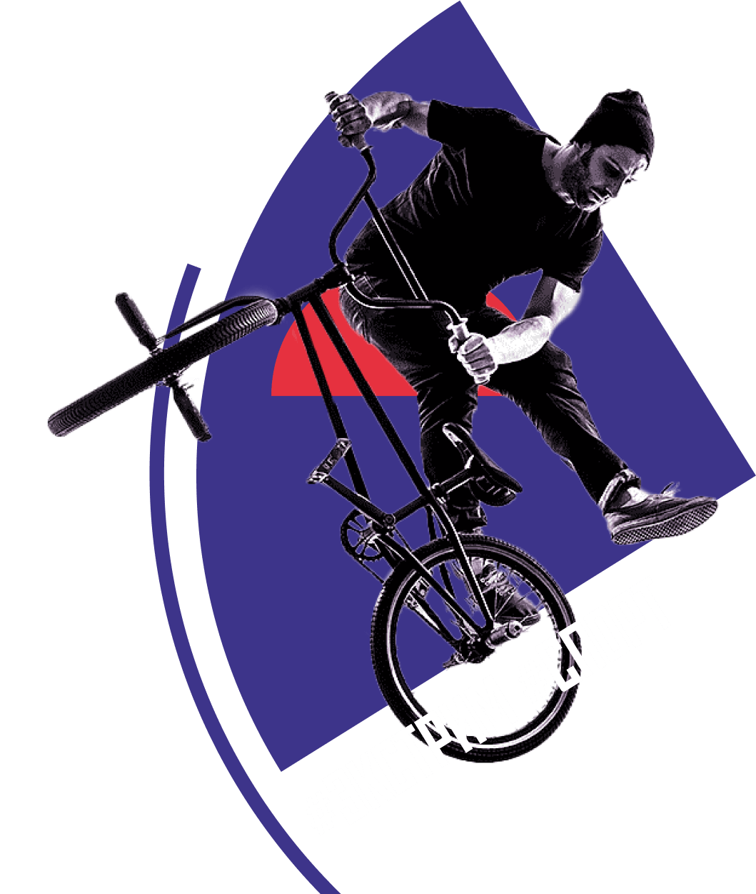
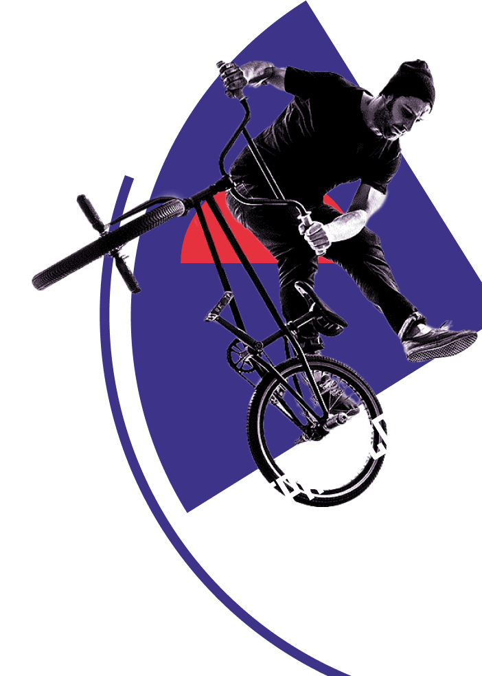
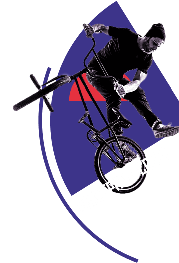

   
Лужники 6 июля 2024 г.
Лужники
6 июля 2024 г.
6 июля 2024 г.
Скоро появится информация о мероприятии и откроется регистрация на активности.
С другими событиями вы можете ознакомиться на портале Московского спорта.
Информация для СМИ на press@moscow.sport